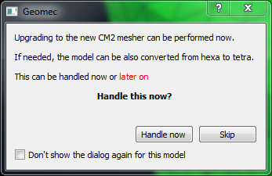
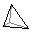
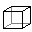
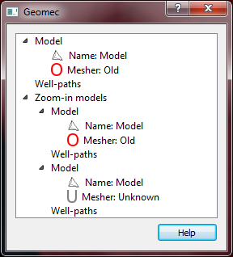
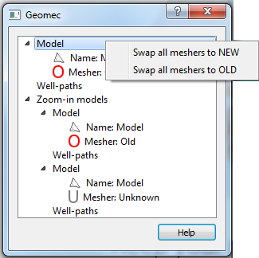
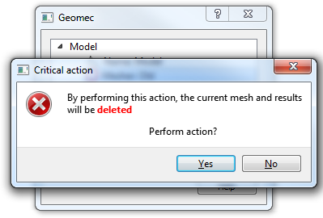
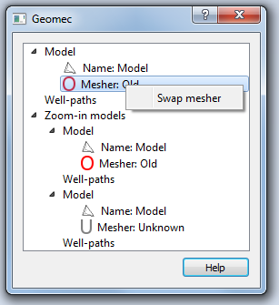
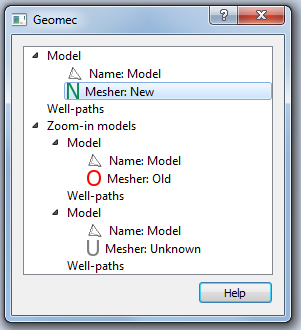
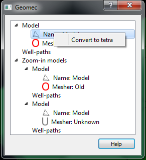
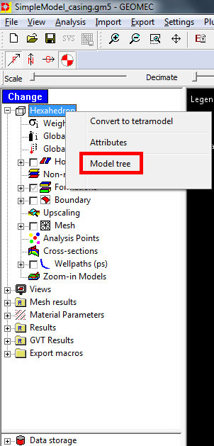

Why does this dialog automatically appear?
When opening a new model...
The dialog appears if any of the models (main model or zoom-in models) has been meshed with the old FGV mesher.
This dialog allows the user to upgrade the mesher to the new CM2 mesher.
If the upgrade is performed, the mesh and any results will be lost.
A confirmation dialog will pop up for the user to accept the loss of data before any action is taken.
Skip this dialog
A checbox at the bottom of the dialog allows the user to skip this dialog the next time this model is opened.
The model needs to be saved for this option to take effect.
Convert model from tetra to hexa
In the dialog, models can also be converted from hexa to tetra.

Handle mesher
If "handle now" is selected, the following dialog appears.
In this dailog two things can be seen:
- The model type
- The mesher used
Icons: mesher
- 'O' means old FGV mesher (Old)
- 'N' means new CM2 mesher
- 'U' means undefined mesher. This happens when the model is hexa and not tetra
- tetra
- hexa



Upgrade the mesher for all models
This can be performed by clicking with the right button in the main model.
As can be seen in the image below, the context menu allows you to swap all models to the new mesher, or vice versa, to the old one.

Confirmation dialog

Swap mesher for a specific model
Click right button on the mesher type.

Model mesher swapped
As can be seen in the image below, model mesher icon has changed from 'O' to 'N'.

Convert model type
From hexa to tetra.
Right click on the model name.
Context menu appears allowing the user to perform the action.

Open the dialog after closing (skipping) it
This can be done as shown in the image below.
